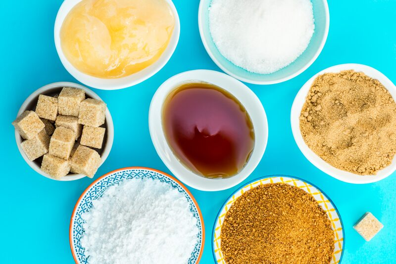
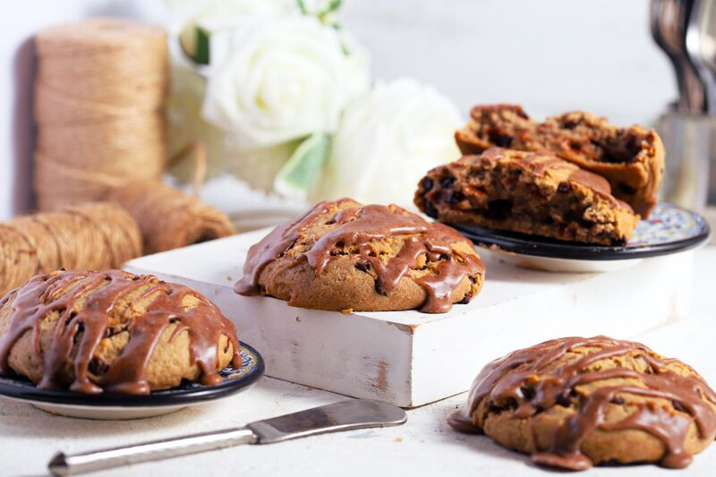
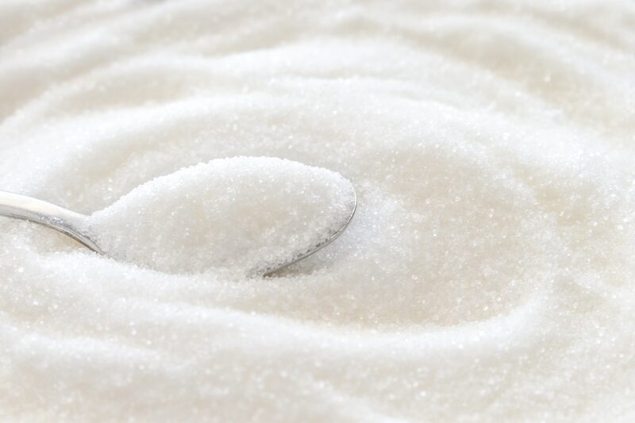
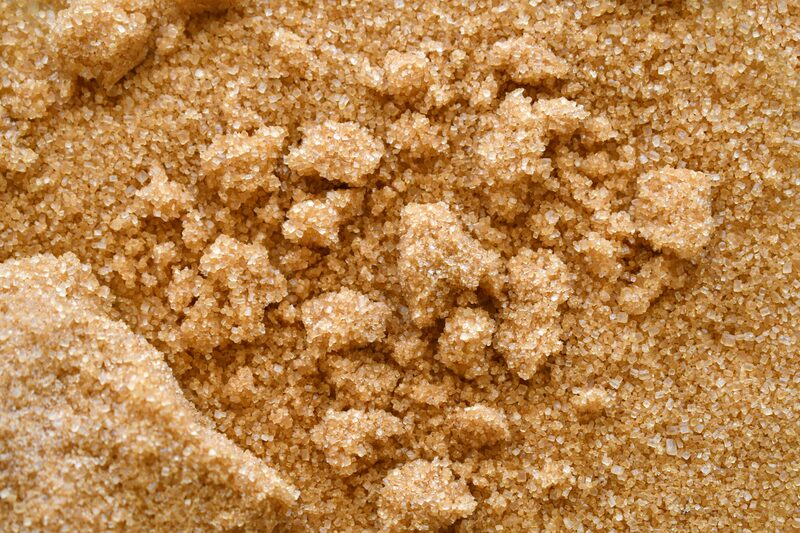
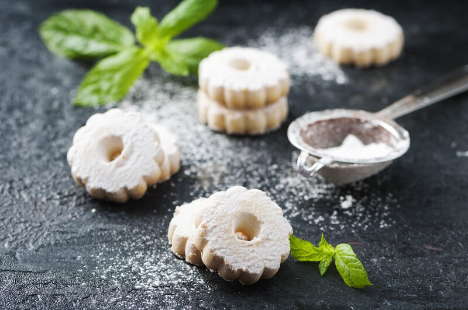
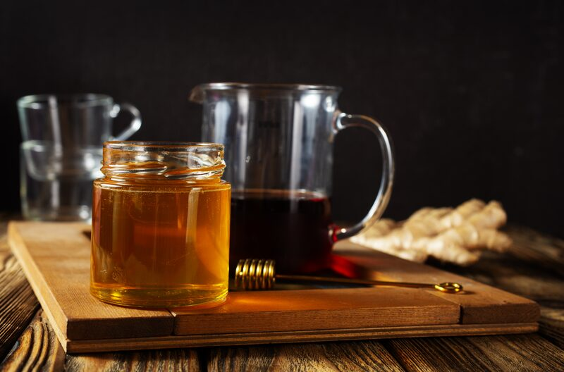
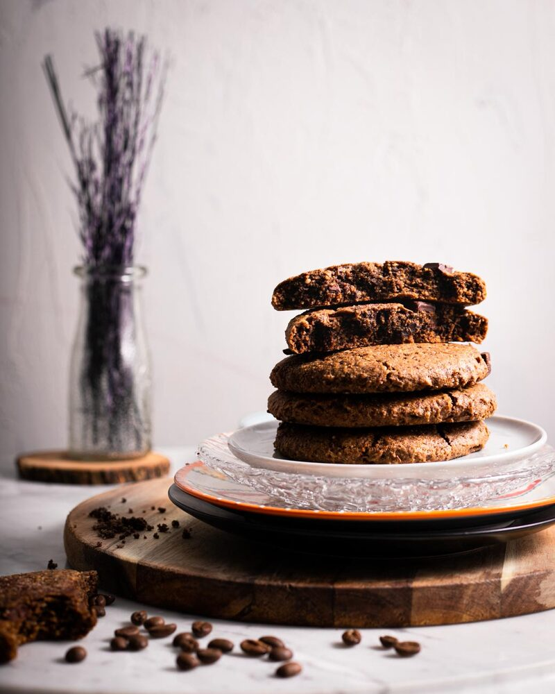
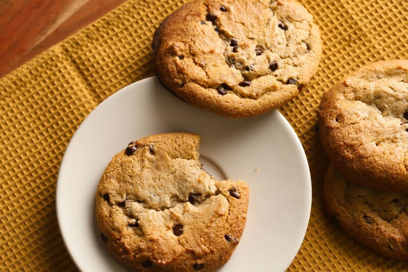

Sugar: The Most Misunderstood Ingredient in Gluten-Free Baking
Most people think sugar is there for sweetness. That's the smallest part of its job.
Most people think sugar is there for sweetness. The reality is that's the smallest part of its job.
In a gluten-free bake, sugar does major structural work. It manages moisture, controls how far your cookie spreads, determines what color your crust turns, and decides whether your bread is still edible on day three. Pull sugar out of a GF recipe, and you don't get a healthier version of the same thing. You get a different, worse thing.
This is why so many “reduced sugar” gluten-free bakes fail. The baker was only thinking about the flavor, not the structural components.
Here's what sugar is really doing.
1. Moisture Retention

Sugar is hygroscopic, which just means it attracts water molecules and holds onto them. This matters more in gluten-free baking than in wheat baking, and it's worth understanding why. Wheat flour builds a gluten network, an elastic protein web that traps water and gas and gives the crumb something to hold onto. Gluten-free flours have no such network. Rice flour, sorghum, millet, tapioca, and potato starch are all largely carbohydrate with minimal protein structure.
Without that network, water has nowhere to stay. That means it will migrate, evaporate, and recrystallize into the starch. The result is the texture every gluten-free baker knows and hates — fine on the first day, sandy and crumbling by the second. By binding water, sugar retains moisture in the crumb rather than allowing it to escape or retrograde into the starch granules. Starch retrogradation is the actual chemical process behind staling, and sugar slows it down.
If your GF bakes go stale unusually fast, look at your sugar before you look at your flour blend. Cutting sugar by 25 to 30 percent will noticeably shorten shelf life. If you're baking for a bake sale, a client, or anything that has to last over a day, that reduction isn't free.
2. Spread and Structure
Sugar melts before your batter sets. That window when the sugar is liquefied is when your cookie spreads. The type of sugar changes the size of that window, which is why the same recipe produces completely different results depending on what sugar you use.
Granulated sugar — maximum spread

Granulated sugar is made up of large crystals of pure sucrose with no additives. It melts cleanly and creates a thin liquid phase that lets the dough flow outward before setting. If you want a wide, crisp, snappy cookie, this is your sugar.
Brown sugar — moderate spread

Brown sugar is granulated sugar with molasses added back. Two things follow from that.
First, molasses is acidic, which accelerates the reaction with baking soda and firms the structure sooner, giving it less time to spread. Second, molasses brings its own moisture and its own hygroscopic properties, so brown sugar holds water harder than white. You get a thicker, chewier, moister cookie with more flavor depth. Dark brown has more molasses than light brown, so the effect is stronger.
Powdered sugar — minimal spread

Powdered sugar is pulverized sucrose cut with roughly 3 percent cornstarch to prevent caking. That cornstarch absorbs free liquid and adds dry structure, so the dough never gets liquid enough to flow.
Use powdered sugar when you want a shortbread, a melt-in-the-mouth crumb, or a cookie that holds a stamped or cut shape.
Liquid sugars — honey, maple, agave, molasses

These add water to the formula, and they're more hygroscopic than granulated. Expect softer, denser, moister results, faster browning, and a shorter set time. They are not a 1:1 swap for granulated, so you'll need to reduce other liquids to compensate.
If your cookies spread into one continuous sheet, move some of your granulated sugar to brown or powdered. If they're staying stubbornly domed, move the other direction.
3. Browning, Color, and Flavor

This is the part most gluten-free bakers get wrong, and it's where the science actually matters.
There are two separate browning reactions in baking, and they have different requirements.
Caramelization
This happens with sugar alone, under heat. No protein required. Sucrose begins breaking down around 320°F (160°C), producing hundreds of new aromatic compounds, the nutty, toasty, slightly bitter notes you associate with a well-baked crust.
The Maillard reaction
This one needs amino acids plus reducing sugars, under heat. It runs at lower temperatures than caramelization and produces a much broader range of savory, roasted, complex flavors. Maillard is why bread crust tastes like bread crust and not like burnt candy.
The struggle with gluten-free bakes is that Maillard requires protein, and gluten-free flours are protein-poor. Wheat flour runs around 10 to 13 percent protein. White rice flour is closer to 6 percent. Tapioca starch and potato starch are effectively zero.
Less protein means fewer available amino acids, which means a weaker Maillard reaction. Your gluten-free bake is running on mostly caramelization while a wheat bake gets both engines. That's the real reason GF goods so often come out pale, flat-tasting, and visually underwhelming even when they're fully cooked.
Reducing sugars matter here
Not all sugars participate in Maillard equally. The reaction needs a reducing sugar with a free carbonyl group. Glucose, fructose, lactose, and maltose all qualify. Sucrose, plain table sugar, does not, in its intact form. It has to invert first, splitting into glucose and fructose, which happens under heat and in the presence of acid. So it eventually participates, just less directly and less efficiently.
This is why brown sugar, honey, molasses, malt syrup, and corn syrup brown harder and faster than white sugar. They arrive carrying reducing sugars.

Practical fixes for pale gluten-free bakes:
- Swap a portion of granulated for brown sugar, honey, or a tablespoon of molasses
- Add protein back: egg wash, milk wash, aquafaba wash, or a few percent of a higher-protein GF flour like sorghum, buckwheat, teff, or chickpea
- Include milk solids — milk powder is a Maillard multiplier, contributing both lactose (a reducing sugar) and protein
- Raise oven temperature slightly and shorten bake time
- Add a small amount of acid to encourage sucrose inversion
The Reality of Substitution
Sugar substitutes replace sweetness. They do not replace function. This is the single most common source of gluten-free baking disappointment.
Erythritol and other sugar alcohols don't caramelize meaningfully, don't participate in Maillard, and don't retain moisture the way sucrose does. Expect pale, dry, fast-staling results with a cooling sensation on the palate.
Allulose is the closest functional match available. It browns readily — arguably too readily, so watch your bake times — and retains moisture reasonably well.
Stevia and monk fruit are intensely sweet at tiny volumes, which means you're removing nearly all of the sugar's bulk. Structure, spread, and moisture all disappear with it. These need a bulking agent to work at all.
Blends exist for a reason. Most commercial sugar-replacement blends pair a high-intensity sweetener with a bulking agent precisely because bulk is doing real work.
If you're reducing sugar for dietary reasons, the best approach is to accept that you're changing the recipe and to compensate elsewhere: more fat for moisture and tenderness, a hydrocolloid like psyllium husk for water retention, a shorter bake, and realistic expectations about shelf life.
Troubleshooting Guide
| Problem | Likely sugar cause | Fix |
|---|---|---|
| Cookies spread into one sheet | Too much granulated sugar; sugar melting before structure sets | Shift some to brown or powdered; chill the dough |
| Cookies won't spread at all | Too much powdered sugar; cornstarch absorbing liquid | Shift toward granulated; check fat ratio |
| Pale, anemic crust | Weak Maillard from low protein and non-reducing sugar | Add brown sugar, molasses, milk powder, or an egg wash |
| Stale by day two | Insufficient sugar for moisture retention | Increase sugar; add honey or a hygroscopic liquid sugar |
| Gritty texture | Sugar not dissolving into the batter | Cream longer; use finer sugar; add liquid earlier |
| Overly dark bottom, raw center | Too much reducing sugar for the oven temp | Lower temperature, extend time, use lighter-colored pans |
| Cloying sweetness, flat flavor | All sweetness, no Maillard depth | Trade some sucrose for brown sugar or malt; add salt |
The Bottom Line
Sugar in a gluten-free bake is doing four jobs simultaneously: holding moisture, controlling spread, driving color and flavor development, and extending shelf life. Sweetness is a component, but it's not the whole story.
Once you start thinking about sugar as a structural ingredient, the same way you think about your flour blend or your binder, your gluten-free results get more predictable. You stop guessing why one batch spread and the next one didn't, because you know the factors behind your bake.